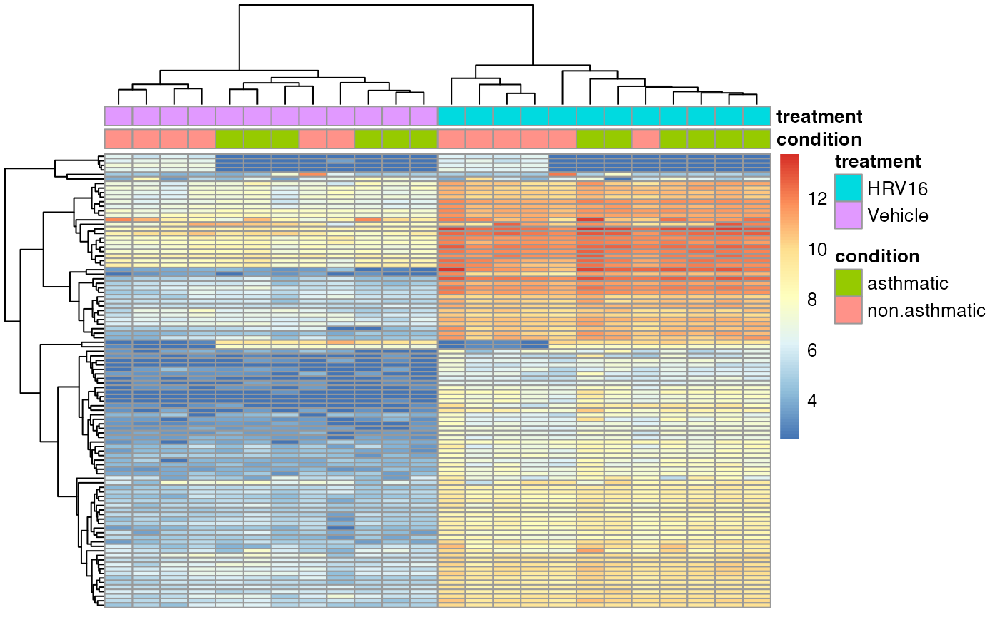
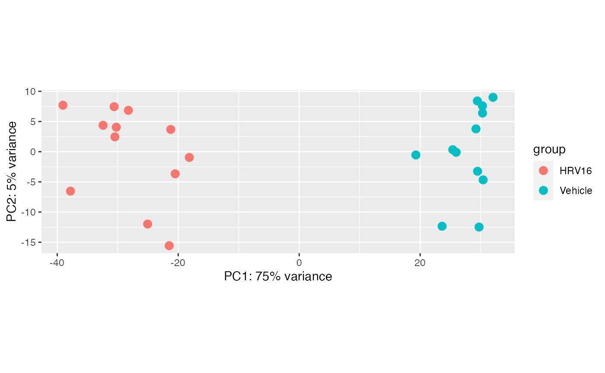
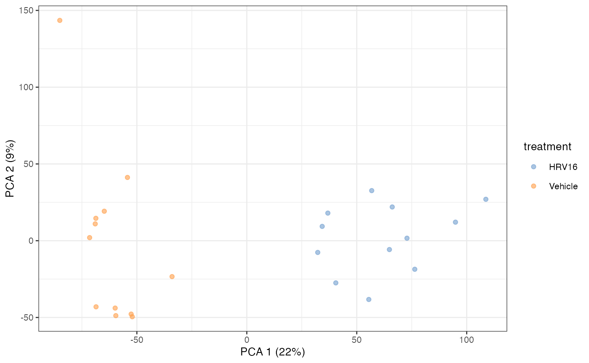

Introduction to Bioconductor
Stephanie Hicks
intro-bioconductor.RmdOverview
Key resources
- Workshop material: pkgdown website
- Code: GitHub
Learning objectives
- Describe what is the Bioconductor and how it’s different than CRAN
- Describe the package types in Bioconductor
- Recognize and work with core Bioconductor objects including
SummarizedExperiment - Be able to perform a basic differential expression analysis with bulk RNA-seq
- Introduce the core Bioconductor object called
SingleCellExperiment.
Introduction to Bioconductor
A brief history of Bioconductor
The Bioconductor project was started in the Fall of 2001, as an initiative for the collaborative creation of extensible software for computational biology and bioinformatics.
The goal of the project is to develop tools for the statistical analysis and comprehension of large datasets and technological artifacts in rigorously and robustly designed experiments. Beyond statistical analyses, the interpretation of statistical results is supported by packages providing biological context, visualization, and reproducibility.
Over the years, software packages contributed to the Bioconductor project have reflected the evolution and emergence of several high-throughput technologies, from microarrays to single-cell genomics, through many variations of sequencing experiments (e.g., RNA-seq, ChIP-seq, DNA-seq), analyses (e.g., sequence variation, copy number variation, single nucleotide polymorphisms), and data modalities (e.g., flow cytometry, proteomics, microscropy and image analysis).
The Bioconductor project culminates at an annual conference in North America in the summer, while regional conferences offer great opportunities for networking in Europe, Asia, and North America.
The project is committed to promote a diverse and inclusive community, including a Code of Conduct enforced by a Code of Conduct committee.

Timeline of major Bioconductor milestones alongside technological advancements.
Timeline of major Bioconductor milestones alongside technological advancements. Above the timeline, the figure marks the first occurrence of major events. Within the timeline, the name of packages providing core infrastructure indicate the release date. Below the timeline, major technological advancements contextualise the evolution of the Bioconductor project over time.
A scientific project
The original publication describes the aims and methods of the project at its inception is Gentleman et al. (2004).
Huber et al. (2015) illustrates the progression of the project, including descriptions of core infrastructure and case studies, from the perspective of both users and developers.
Amezquita et al. (2020) reviewed further developments of the project in the wake of single-cell genomics technologies.
Many more publications and book chapters cite the Bioconductor project, with recent example listed on the Bioconductor website.
In addition, there is a core team which is supported by an NIH grant, and developers who contribute to the open source Bioconductor packages.
Overview and relationship to CRAN
Undoubtedly, software packages are the best-known aspect of the Bioconductor project. Since its inception in 2001, the repository has grown over time to host thousands of packages.
The Bioconductor project has extended the preexisting CRAN repository – much larger and general-purpose in scope – to comprise R packages primarily catering for bioinformatics and computational biology analyses.
The Bioconductor release cycle
The Bioconductor project also extended the packaging infrastructure of the CRAN repository to better support the deployment and management of packages at the user level.
In particular, the Bioconductor projects features a 6-month release cycle (typically around April and October), which sees a snapshot of the current version of all packages in the Bioconductor repository earmarked for a specific version of R.
R itself is released on an annual basis (typically around April), meaning that for each release of R, two compatible releases of Bioconductor packages are available.
As such, Bioconductor package developers are required to always use the version of R that will be associated with the next release of the Bioconductor project.
This means using the development version of R between October and April, and the release version of R between April and October.
Why? The strict Bioconductor release cycle prevents users from installing temporally distant versions of packages that were very likely never tested together.
This practice reflects the development cycle of packages of both CRAN and Bioconductor, where contemporaneous packages are regularly tested by automated systems to ensure that the latest software updates in package dependencies do not break downstream packages, or prompts those package maintainers to update their own software as a consequence.
Prior to each Bioconductor release, packages that do not pass the requires suites of automated tests are deprecated and subsequently removed from the repository.
This ensures that each Bioconductor release provides a suite of packages that are mutually compatible, traceable, and guaranteed to function for the associated version of R.

Timeline of release dates for selected Bioconductor and R versions.
Timeline of release dates for selected Bioconductor and R versions. The upper section of the timeline indicates versions and approximate release dates for the R project. The lower section of the timeline indicates versions and release dates for the Bioconductor project. Source: Bioconductor.
Package types
Packages are broadly divided in four major categories:
- software
- annotation data
- experiment data
- workflows
Software packages themselves can be subdivided into packages that
- provide infrastructure (i.e., classes) to store and access data
- packages that provide methodological tools to process data stored in those data structures
This separation of structure and analysis is at the core of the Bioconductor project, encouraging developers of new methodological software packages to thoughtfully re-use existing data containers where possible, and reducing the cognitive burden imposed on users who can more easily experiment with alternative workflows without the need to learn and convert between different data structures.
Annotation data packages provide self-contained databases of diverse genomic annotations (e.g., gene identifiers, biological pathways).
- Different collections of annotation packages can be found in the Bioconductor project.
- They are identifiable by their respective naming pattern, and the information that they contain.
For instance, the so-called OrgDb packages (e.g., the
org.Hs.eg.db
package) provide information mapping different types of gene identifiers
and pathway databases; the so-called EnsDb (e.g., EnsDb.Hsapiens.v86)
packages encapsulate individual versions of the Ensembl annotations in
Bioconductor packages; and the so-called TxDb packages
(e.g., TxDb.Hsapiens.UCSC.hg38.knownGene)
encapsulate individual versions UCSC gene annotation tables.
Experiment data packages provide self-contained datasets that are often used by software package developers to demonstrate the use of their package on well-known standard datasets in their package vignettes.
Finally, workflow packages exclusively provide collections of vignettes that demonstrate the combined usage of several other packages as a coherent workflow, but do not provide any new source code or functionality themselves.
Online communication channels
Support site
The Bioconductor support site provides a platform where users and developers can communicate freely (following the Bioconductor Code of Conduct) to discuss issues on a range of subjects, ranging from packages to conceptual questions about best practices.
Slack workspace
The Bioconductor Slack workspace is an open space that all community members are welcome to join (for free) and use for rapid interactions. Currently, the “Pro” pricing plan kindly supported by core funding provides:
- Unlimited message archive
- Unlimited apps
- Group video calls with screen sharing
- Work securely with other organizations using Slack Connect
A wide range of channels have been created to discuss a range of subjects, and community members can freely join the discussion on those channels of create new ones to discuss new subjects.
Important announcements are posted on the #general
channel.
Developer Mailing List
The bioc-devel@r-project.org mailing list is used for communication between package developers, and announcements from the Biocondutor core team.
A scientific and technical community
- Scientific Advisory Board (SAB) Meet Annually, External and Internal leader in the field who act as project advisors. No Term limits.
- Technical Advisory Board (TAB). Meet monthly to consider technical aspects of core infastructure and scientific direction of the project. 15 members, 3 year term. Annual open-to-all elections to rotate members. Current officers are Vince Carey (chair), Levi Waldron (vice Chair) Charlotte Soneson (Secretary).
- Community Advisory Board (CAB) Meet monthly to consider community outreach, events, education and training. 15 members, 3 year term. Annual open-to-all elections to rotate members. Current officers are Aedin Culhane (chair), Matt Ritchie (co Chair), Lori Kern (Secretary).
- Code of Conduct committee
Getting started with Bioconductor
Before we get started, you need to know how to install Bioconductor packages. The most important details are:
- Bioconductor is a package repository, like CRAN
- All Bioconductor packages must be installed following the instructions here: https://bioconductor.org/install
- Bioconductor packages are linked in their versions, both to each other and to the version of R
- Bioconductor’s installation function will look up your version of R and give you the appropriate versions of Bioconductor packages
- If you want the latest version of Bioconductor, you need to use the latest version of R.
How do you know if a package is a Bioconductor package?
For one thing, you can just google the package name and you will see either CRAN or Bioconductor as a first result (packages must be in one or the other, they are not allowed to be on both repositories).
But also, you can use Bioconductor’s installation function to install any packages, even ones on CRAN.
By the way, you can install multiple packages at once by making a
string vector: BiocManager::install(c("foo","bar"))
Working with Bioconductor objects
Bioconductor’s infrastructure is built up of object classes.
An example of a class is GRanges (stands for “genomic ranges”), which is a way to specify a set of ranges in a particular genome, e.g. from basepair 101 to basepair 200 on chromosome 1 of the human genome (version 38).
What’s an object?
Well everything in R is an object, but usually when we talk about Bioconductor objects, we mean data structures containing many attributes, so more complex than a vector or matrix.
And the objects have specific methods that help you either access the information in the object, run analyses on the object, plot the object, etc.
Bioconductor also allows for class hierarchy, which means that you can define a class of object that inherits the structure and methods of a superclass on which it depends. This last point is mostly important for people who are developing new software for Bioconductor (maybe that’s you!)
We will introduce the core Bioconductor objects here.
SummarizedExperiment (SE)
First, we will discuss one of the most important classes of object, which is the SummarizedExperiment, or SE.
SEs have the structure:
- a matrix of data, rows are genomic features, and columns are samples
- a table of data about the samples (columns)
- a table of data about the features (rows)
A diagram of this 3-part structure can be found here.
In SE, the 3 parts of the object are called 1) assay, 2)
colData and 3) rowData or
rowRanges.
Note: There was a class of object that came before the SE, called the ExpressionSet, which was used primarily to store microarray data.
Here we will skip over the ExpressionSet, and just look at SEs.
It helps to start by making a small toy SE, to see how the pieces come together. (Often you won’t make an SE manually, but it will be downloaded from an external source, or generated by a function that you call, e.g. the tximeta or some other data loading function.)
library(SummarizedExperiment)
col_data <- data.frame(sample=factor(1:6),
condition=factor(c("A","A","B","B","C","C")),
treated=factor(rep(0:1,3)))
col_data## sample condition treated
## 1 1 A 0
## 2 2 A 1
## 3 3 B 0
## 4 4 B 1
## 5 5 C 0
## 6 6 C 1An important aspect of SEs is that the rows can optionally correspond to particular set of GRanges
- e.g. a row of an SE could give the number of RNA-seq reads that can be assigned to a particular gene, and the row could also have metadata in the 3rd slot including, e.g. location of the gene in the genome.
In this case, we use the rowRanges slot to specify the
information.
If we don’t have ranges, we can just put a table on the “side” of the
SE by specifying rowData.
I will show in the example though how to provide
rowRanges.
Let’s use the first 10 genes in the Ensembl database for human.
The following code loads a database, pulls out all the genes (as GRanges), removes extra “non-standard” chromosomes, and then subsets to the first 10 genes.
library(EnsDb.Hsapiens.v86)
txdb <- EnsDb.Hsapiens.v86
g <- genes(txdb)
g <- keepStandardChromosomes(g, pruning.mode="coarse")
row_ranges <- g[1:10]We will make up some simulated “expression” measurements, and then store these in the SE.
I call list so I can name the matrix, otherwise it would
not be named.
exprs <- matrix(rnorm(6 * 10), ncol=6, nrow=10)
se <- SummarizedExperiment(assay = list("exprs" = exprs),
colData = col_data,
rowRanges = row_ranges)
se## class: RangedSummarizedExperiment
## dim: 10 6
## metadata(0):
## assays(1): exprs
## rownames(10): ENSG00000223972 ENSG00000227232 ... ENSG00000238009
## ENSG00000239945
## rowData names(6): gene_id gene_name ... symbol entrezid
## colnames: NULL
## colData names(3): sample condition treatedWe see this object has one named matrix. The object could have multiple matrices (as long as these are the same shape).
In that case you could access the first with assay and
in general by name, e.g. assay(se, "exprs") or equivalently
assays(se)[["exprs"]] .
assayNames(se)## [1] "exprs"Finally, if we wanted to add data onto the rows, for example, the
score of a test on the matrix data, we use the metadata columns
function, or mcols:
mcols(se)$score <- rnorm(10)
mcols(se)## DataFrame with 10 rows and 7 columns
## gene_id gene_name gene_biotype
## <character> <character> <character>
## ENSG00000223972 ENSG00000223972 DDX11L1 transcribed_unproces..
## ENSG00000227232 ENSG00000227232 WASH7P unprocessed_pseudogene
## ENSG00000278267 ENSG00000278267 MIR6859-1 miRNA
## ENSG00000243485 ENSG00000243485 MIR1302-2 lincRNA
## ENSG00000237613 ENSG00000237613 FAM138A lincRNA
## ENSG00000268020 ENSG00000268020 OR4G4P unprocessed_pseudogene
## ENSG00000240361 ENSG00000240361 OR4G11P unprocessed_pseudogene
## ENSG00000186092 ENSG00000186092 OR4F5 protein_coding
## ENSG00000238009 ENSG00000238009 RP11-34P13.7 lincRNA
## ENSG00000239945 ENSG00000239945 RP11-34P13.8 lincRNA
## seq_coord_system symbol entrezid
## <character> <character> <list>
## ENSG00000223972 chromosome DDX11L1 100287596,100287102,727856,...
## ENSG00000227232 chromosome WASH7P NA
## ENSG00000278267 chromosome MIR6859-1 102466751
## ENSG00000243485 chromosome MIR1302-2 105376912,100302278
## ENSG00000237613 chromosome FAM138A 654835,645520,641702
## ENSG00000268020 chromosome OR4G4P NA
## ENSG00000240361 chromosome OR4G11P NA
## ENSG00000186092 chromosome OR4F5 79501
## ENSG00000238009 chromosome RP11-34P13.7 NA
## ENSG00000239945 chromosome RP11-34P13.8 NA
## score
## <numeric>
## ENSG00000223972 2.1701177
## ENSG00000227232 0.0461614
## ENSG00000278267 2.7315729
## ENSG00000243485 0.2195109
## ENSG00000237613 1.0484915
## ENSG00000268020 -1.7197824
## ENSG00000240361 0.2221783
## ENSG00000186092 -0.5916436
## ENSG00000238009 -1.4931525
## ENSG00000239945 -2.4350805Adding data to the column metadata is even easier, we can just use
$:
## DataFrame with 6 rows and 4 columns
## sample condition treated librarySize
## <factor> <factor> <factor> <numeric>
## 1 1 A 0 1940042
## 2 2 A 1 1696274
## 3 3 B 0 1799309
## 4 4 B 1 1573100
## 5 5 C 0 1102580
## 6 6 C 1 1782852Using the ranges of a SE
How does this additional functionality of the rowRanges
facilitate faster data analysis?
Suppose we are working with another data set besides se
and we find a region of interest on chromsome 1.
If we want to pull out the expression data for that region, we just
ask for the subset of se that overlaps.
First, we build the query region, and then use the
GRanges function overlapsAny() within
single square brackets (like you would subset any matrix-like
object):
query <- GRanges("1", IRanges(25000,40000))
se_sub <- se[overlapsAny(se, query), ]We could have equivalently used the shorthand code:
se_sub <- se[se %over% query,]We get just three ranges, and three rows of the SE:
rowRanges(se_sub)## GRanges object with 3 ranges and 7 metadata columns:
## seqnames ranges strand | gene_id gene_name
## <Rle> <IRanges> <Rle> | <character> <character>
## ENSG00000227232 1 14404-29570 - | ENSG00000227232 WASH7P
## ENSG00000243485 1 29554-31109 + | ENSG00000243485 MIR1302-2
## ENSG00000237613 1 34554-36081 - | ENSG00000237613 FAM138A
## gene_biotype seq_coord_system symbol
## <character> <character> <character>
## ENSG00000227232 unprocessed_pseudogene chromosome WASH7P
## ENSG00000243485 lincRNA chromosome MIR1302-2
## ENSG00000237613 lincRNA chromosome FAM138A
## entrezid score
## <list> <numeric>
## ENSG00000227232 <NA> 0.0461614
## ENSG00000243485 105376912,100302278 0.2195109
## ENSG00000237613 654835,645520,641702 1.0484915
## -------
## seqinfo: 25 sequences (1 circular) from GRCh38 genome
assay(se_sub)## [,1] [,2] [,3] [,4] [,5]
## ENSG00000227232 -0.08079092 -1.585902 -0.5836049 0.7321954 -0.9666263
## ENSG00000243485 -1.29885760 1.298616 -0.2868365 0.2591491 -1.6483581
## ENSG00000237613 0.84994374 -1.451339 -1.7064174 1.2807216 0.2915711
## [,6]
## ENSG00000227232 -2.2637416
## ENSG00000243485 -0.3265077
## ENSG00000237613 0.1643328Another useful property is that we know metadata about the chromosomes, and the version of the genome.
- Note: If you were not yet aware, the basepair position of a given feature, say gene XYZ, will change between versions of the genome, as sequences are added or rearranged.
seqinfo(se)## Seqinfo object with 25 sequences (1 circular) from GRCh38 genome:
## seqnames seqlengths isCircular genome
## 1 248956422 FALSE GRCh38
## 10 133797422 FALSE GRCh38
## 11 135086622 FALSE GRCh38
## 12 133275309 FALSE GRCh38
## 13 114364328 FALSE GRCh38
## ... ... ... ...
## 8 145138636 FALSE GRCh38
## 9 138394717 FALSE GRCh38
## MT 16569 TRUE GRCh38
## X 156040895 FALSE GRCh38
## Y 57227415 FALSE GRCh38Downloading SE data
Let’s download a SE object from recount2, which performs a basic summarization of public data sets with gene expression data.
This dataset contains RNA-seq samples from human airway epithelial cell cultures.
The paper is here. The structure of the experiment was that, cell cultures from 6 asthmatic and 6 non-asthmatics donors were treated with viral infection or left untreated (controls).
So we have 2 samples (control or treated) for each of the 12 donors.
library(here)
# tests if a directory named "data" exists locally
if(!dir.exists(here("data"))) { dir.create(here("data")) }
file <- "asthma.rda"
if (!file.exists(here("data", file))){
url <- "http://duffel.rail.bio/recount/SRP046226/rse_gene.Rdata"
download.file(url, here("data", file))
}
load(here("data", file))We use a custom function to produce a matrix which a count of RNA fragments for each gene (rows) and each sample (columns).
(Recount project calls these objects rse for
RangedSummarizedExperiment, meaning it has
rowRanges information.)
my_scale_counts <- function(rse_gene, round=TRUE) {
cts <- assays(rse_gene)$counts
# mapped_read_count includes the count for both reads of a pair
paired <- ifelse(colData(rse_gene)$paired_end, 2, 1)
x <- (colData(rse_gene)$mapped_read_count / paired) / colSums(cts)
assays(rse_gene)$counts <- t(t(assays(rse_gene)$counts) * x)
if (round) {
assays(rse_gene)$counts <- round(assays(rse_gene)$counts)
}
rse_gene
}
rse <- my_scale_counts(rse_gene)We can take a peek at the column data:
colData(rse)[,1:6]## DataFrame with 24 rows and 6 columns
## project sample experiment run
## <character> <character> <character> <character>
## SRR1565926 SRP046226 SRS694613 SRX692912 SRR1565926
## SRR1565927 SRP046226 SRS694614 SRX692913 SRR1565927
## SRR1565928 SRP046226 SRS694615 SRX692914 SRR1565928
## SRR1565929 SRP046226 SRS694616 SRX692915 SRR1565929
## SRR1565930 SRP046226 SRS694617 SRX692916 SRR1565930
## ... ... ... ... ...
## SRR1565945 SRP046226 SRS694632 SRX692931 SRR1565945
## SRR1565946 SRP046226 SRS694633 SRX692932 SRR1565946
## SRR1565947 SRP046226 SRS694634 SRX692933 SRR1565947
## SRR1565948 SRP046226 SRS694635 SRX692934 SRR1565948
## SRR1565949 SRP046226 SRS694636 SRX692935 SRR1565949
## read_count_as_reported_by_sra reads_downloaded
## <integer> <integer>
## SRR1565926 12866750 12866750
## SRR1565927 12797108 12797108
## SRR1565928 13319016 13319016
## SRR1565929 13725752 13725752
## SRR1565930 10882416 10882416
## ... ... ...
## SRR1565945 13791854 13791854
## SRR1565946 13480842 13480842
## SRR1565947 13166594 13166594
## SRR1565948 13320398 13320398
## SRR1565949 13002276 13002276The information we are interested in is contained in the
characteristics column (which is a character list).
class(rse$characteristics)## [1] "CompressedCharacterList"
## attr(,"package")
## [1] "IRanges"
rse$characteristics[1:3]## CharacterList of length 3
## [[1]] cell type: Isolated from human trachea-bronchial tissues ...
## [[2]] cell type: Isolated from human trachea-bronchial tissues ...
## [[3]] cell type: Isolated from human trachea-bronchial tissues ...
rse$characteristics[[1]]## [1] "cell type: Isolated from human trachea-bronchial tissues"
## [2] "passages: 2"
## [3] "disease state: asthmatic"
## [4] "treatment: HRV16"We can pull out the 3 and 4 element using the sapply
function and the square bracket function.
I know this syntax looks a little funny, but it’s really just saying, use the single square bracket, pull out the third element (or fourth element).
rse$condition <- sapply(rse$characteristics, `[`, 3)
rse$treatment <- sapply(rse$characteristics, `[`, 4)
table(rse$condition, rse$treatment)##
## treatment: HRV16 treatment: Vehicle
## disease state: asthmatic 6 6
## disease state: non-asthmatic 6 6Let’s see what the rowRanges of this experiment look
like:
rowRanges(rse)## GRanges object with 58037 ranges and 3 metadata columns:
## seqnames ranges strand | gene_id
## <Rle> <IRanges> <Rle> | <character>
## ENSG00000000003.14 chrX 100627109-100639991 - | ENSG00000000003.14
## ENSG00000000005.5 chrX 100584802-100599885 + | ENSG00000000005.5
## ENSG00000000419.12 chr20 50934867-50958555 - | ENSG00000000419.12
## ENSG00000000457.13 chr1 169849631-169894267 - | ENSG00000000457.13
## ENSG00000000460.16 chr1 169662007-169854080 + | ENSG00000000460.16
## ... ... ... ... . ...
## ENSG00000283695.1 chr19 52865369-52865429 - | ENSG00000283695.1
## ENSG00000283696.1 chr1 161399409-161422424 + | ENSG00000283696.1
## ENSG00000283697.1 chrX 149548210-149549852 - | ENSG00000283697.1
## ENSG00000283698.1 chr2 112439312-112469687 - | ENSG00000283698.1
## ENSG00000283699.1 chr10 12653138-12653197 - | ENSG00000283699.1
## bp_length symbol
## <integer> <CharacterList>
## ENSG00000000003.14 4535 TSPAN6
## ENSG00000000005.5 1610 TNMD
## ENSG00000000419.12 1207 DPM1
## ENSG00000000457.13 6883 SCYL3
## ENSG00000000460.16 5967 C1orf112
## ... ... ...
## ENSG00000283695.1 61 <NA>
## ENSG00000283696.1 997 <NA>
## ENSG00000283697.1 1184 LOC101928917
## ENSG00000283698.1 940 <NA>
## ENSG00000283699.1 60 MIR4481
## -------
## seqinfo: 25 sequences (1 circular) from an unspecified genome; no seqlengths
seqinfo(rse)## Seqinfo object with 25 sequences (1 circular) from an unspecified genome; no seqlengths:
## seqnames seqlengths isCircular genome
## chr1 <NA> <NA> <NA>
## chr2 <NA> <NA> <NA>
## chr3 <NA> <NA> <NA>
## chr4 <NA> <NA> <NA>
## chr5 <NA> <NA> <NA>
## ... ... ... ...
## chr21 <NA> <NA> <NA>
## chr22 <NA> <NA> <NA>
## chrX <NA> <NA> <NA>
## chrY <NA> <NA> <NA>
## chrM <NA> TRUE <NA>The rowRanges here were determined by the quantification
method that the recount2 authors used.
We don’t know what the genome is from the seqinfo, but
we could look this up from the project website.
The following code I use to clean up the condition and treatment variables:
library(magrittr)
rse$condition %<>% (function(x) {
factor(sub("-",".", sub("disease state: (.*)","\\1",x) ))
})
rse$treatment %<>% (function(x) factor(sub("treatment: (.*)","\\1",x)))Now we have:
table(rse$condition, rse$treatment)##
## HRV16 Vehicle
## asthmatic 6 6
## non.asthmatic 6 6Visualizing count matrix data in a SE
Here we just use a transformation so that we can compute meaningful distances on count data (without a larger discussion on normalization).
We build a DESeqDataSet and then specify the
experimental design using a ~ and the variables that we
expect to produce differences in the counts. (These variables are used
to assess how much technical variability is in the data, but not used in
the transformation function itself.)
library(DESeq2)
dds <- DESeqDataSet(rse, ~condition + treatment)We use this function, which implements a variance stabilizing transformation:
vsd <- vst(dds)We calculate the variance across all samples (on the transformed data):
library(matrixStats)
rv <- rowVars(assay(vsd))
o <- order(rv, decreasing=TRUE)[1:100]Finally, before plotting a heatmap, we extract the covariates that we want to annotated the top of the plot.
anno_col <- as.data.frame(colData(vsd)[,c("condition","treatment")])
anno_col## condition treatment
## SRR1565926 asthmatic HRV16
## SRR1565927 asthmatic HRV16
## SRR1565928 asthmatic HRV16
## SRR1565929 asthmatic HRV16
## SRR1565930 asthmatic HRV16
## SRR1565931 asthmatic HRV16
## SRR1565932 asthmatic Vehicle
## SRR1565933 asthmatic Vehicle
## SRR1565934 asthmatic Vehicle
## SRR1565935 asthmatic Vehicle
## SRR1565936 asthmatic Vehicle
## SRR1565937 asthmatic Vehicle
## SRR1565938 non.asthmatic HRV16
## SRR1565939 non.asthmatic HRV16
## SRR1565940 non.asthmatic HRV16
## SRR1565941 non.asthmatic HRV16
## SRR1565942 non.asthmatic HRV16
## SRR1565943 non.asthmatic HRV16
## SRR1565944 non.asthmatic Vehicle
## SRR1565945 non.asthmatic Vehicle
## SRR1565946 non.asthmatic Vehicle
## SRR1565947 non.asthmatic Vehicle
## SRR1565948 non.asthmatic Vehicle
## SRR1565949 non.asthmatic VehicleThis code pull out the top of the transformed data by variance, and adds an annotation to the top of the plot.
By default the rows and columns will be clustered by Euclidean
distance. See ?pheatmap for more details on this function
(it’s a very detailed manual page).
library(pheatmap)
pheatmap(assay(vsd)[o,],
annotation_col=anno_col,
show_rownames=FALSE,
show_colnames=FALSE)
We can also easily make a PCA plot with dedicated functions:
plotPCA(vsd, intgroup="treatment")
SingleCellExperiment
An example of a class that extends the SE is SingleCellExperiment. This is a special object type for looking at single cell data.
For more details, there is a free online book “Orchestrating Single Cell Analysis With Bioconductor” produced by a group within the Bioconductor Project, with lots of example analyses: OSCA.
Here we show a quick example of how this object extends the SE.
## class: SingleCellExperiment
## dim: 58037 24
## metadata(0):
## assays(1): counts
## rownames(58037): ENSG00000000003.14 ENSG00000000005.5 ...
## ENSG00000283698.1 ENSG00000283699.1
## rowData names(3): gene_id bp_length symbol
## colnames(24): SRR1565926 SRR1565927 ... SRR1565948 SRR1565949
## colData names(23): project sample ... condition treatment
## reducedDimNames(0):
## mainExpName: NULL
## altExpNames(0):There are special functions dedicated to scaling the samples (we will discuss this technical aspect soon):
library(scran)
sce <- computeSumFactors(sce)
sizeFactors(sce)## [1] 0.7672143 0.8205514 0.8686567 0.9479224 0.6484723 0.9815079 1.0797070
## [8] 1.0569889 1.4377886 0.9465292 1.4759422 1.2630195 0.8889808 1.0524670
## [15] 0.9677885 0.8086102 0.8806503 0.8999780 0.9505805 1.0430322 1.2527967
## [22] 0.9908707 0.5208294 1.4491155Similarly, dedicated functions for transformations:
sce <- logNormCounts(sce)
assayNames(sce)## [1] "counts" "logcounts"And dedicated functions and new slots for reduced dimensions:
set.seed(1)
sce <- fixedPCA(sce, rank=5, subset.row=NULL)
reducedDimNames(sce)## [1] "PCA"We can manually get at the PCs:
pca <- reducedDim(sce, "PCA")
plot(pca[,1:2])But we can more easily use dedicated visualization functions:
library(scater)
plotReducedDim(sce, "PCA", colour_by="treatment")
Session Info
## R version 4.2.1 (2022-06-23)
## Platform: aarch64-apple-darwin21.6.0 (64-bit)
## Running under: macOS Monterey 12.5.1
##
## Matrix products: default
## BLAS: /opt/homebrew/Cellar/openblas/0.3.21/lib/libopenblasp-r0.3.21.dylib
## LAPACK: /opt/homebrew/Cellar/r/4.2.1_2/lib/R/lib/libRlapack.dylib
##
## locale:
## [1] en_US.UTF-8/en_US.UTF-8/en_US.UTF-8/C/en_US.UTF-8/en_US.UTF-8
##
## attached base packages:
## [1] stats4 stats graphics grDevices utils datasets methods
## [8] base
##
## other attached packages:
## [1] scater_1.24.0 ggplot2_3.3.6
## [3] scran_1.24.0 scuttle_1.6.3
## [5] SingleCellExperiment_1.18.0 pheatmap_1.0.12
## [7] DESeq2_1.36.0 magrittr_2.0.3
## [9] here_1.0.1 EnsDb.Hsapiens.v86_2.99.0
## [11] ensembldb_2.20.2 AnnotationFilter_1.20.0
## [13] GenomicFeatures_1.48.3 AnnotationDbi_1.58.0
## [15] SummarizedExperiment_1.26.1 Biobase_2.56.0
## [17] GenomicRanges_1.48.0 GenomeInfoDb_1.32.3
## [19] IRanges_2.30.1 S4Vectors_0.34.0
## [21] BiocGenerics_0.42.0 MatrixGenerics_1.8.1
## [23] matrixStats_0.62.0
##
## loaded via a namespace (and not attached):
## [1] BiocFileCache_2.4.0 systemfonts_1.0.4
## [3] igraph_1.3.4 lazyeval_0.2.2
## [5] splines_4.2.1 BiocParallel_1.30.3
## [7] digest_0.6.29 htmltools_0.5.3
## [9] viridis_0.6.2 fansi_1.0.3
## [11] memoise_2.0.1 ScaledMatrix_1.4.0
## [13] cluster_2.1.4 limma_3.52.2
## [15] Biostrings_2.64.1 annotate_1.74.0
## [17] pkgdown_2.0.6 prettyunits_1.1.1
## [19] colorspace_2.0-3 ggrepel_0.9.1
## [21] blob_1.2.3 rappdirs_0.3.3
## [23] textshaping_0.3.6 xfun_0.32
## [25] dplyr_1.0.10 crayon_1.5.1
## [27] RCurl_1.98-1.8 jsonlite_1.8.0
## [29] genefilter_1.78.0 survival_3.4-0
## [31] glue_1.6.2 gtable_0.3.1
## [33] zlibbioc_1.42.0 XVector_0.36.0
## [35] DelayedArray_0.22.0 BiocSingular_1.12.0
## [37] scales_1.2.1 DBI_1.1.3
## [39] edgeR_3.38.4 Rcpp_1.0.9
## [41] viridisLite_0.4.1 xtable_1.8-4
## [43] progress_1.2.2 dqrng_0.3.0
## [45] bit_4.0.4 rsvd_1.0.5
## [47] metapod_1.4.0 httr_1.4.4
## [49] RColorBrewer_1.1-3 ellipsis_0.3.2
## [51] pkgconfig_2.0.3 XML_3.99-0.10
## [53] farver_2.1.1 sass_0.4.2
## [55] dbplyr_2.2.1 locfit_1.5-9.6
## [57] utf8_1.2.2 tidyselect_1.1.2
## [59] labeling_0.4.2 rlang_1.0.5
## [61] munsell_0.5.0 tools_4.2.1
## [63] cachem_1.0.6 cli_3.3.0
## [65] generics_0.1.3 RSQLite_2.2.16
## [67] evaluate_0.16 stringr_1.4.1
## [69] fastmap_1.1.0 yaml_2.3.5
## [71] ragg_1.2.2 knitr_1.40
## [73] bit64_4.0.5 fs_1.5.2
## [75] purrr_0.3.4 KEGGREST_1.36.3
## [77] sparseMatrixStats_1.8.0 xml2_1.3.3
## [79] biomaRt_2.52.0 BiocStyle_2.24.0
## [81] compiler_4.2.1 rstudioapi_0.14
## [83] beeswarm_0.4.0 filelock_1.0.2
## [85] curl_4.3.2 png_0.1-7
## [87] statmod_1.4.37 tibble_3.1.8
## [89] geneplotter_1.74.0 bslib_0.4.0
## [91] stringi_1.7.8 highr_0.9
## [93] desc_1.4.1 lattice_0.20-45
## [95] bluster_1.6.0 ProtGenerics_1.28.0
## [97] Matrix_1.4-1 vctrs_0.4.1
## [99] pillar_1.8.1 lifecycle_1.0.1
## [101] BiocManager_1.30.18 jquerylib_0.1.4
## [103] BiocNeighbors_1.14.0 bitops_1.0-7
## [105] irlba_2.3.5 rtracklayer_1.56.1
## [107] R6_2.5.1 BiocIO_1.6.0
## [109] gridExtra_2.3 vipor_0.4.5
## [111] codetools_0.2-18 assertthat_0.2.1
## [113] rprojroot_2.0.3 rjson_0.2.21
## [115] withr_2.5.0 GenomicAlignments_1.32.1
## [117] Rsamtools_2.12.0 GenomeInfoDbData_1.2.8
## [119] parallel_4.2.1 hms_1.1.2
## [121] grid_4.2.1 beachmat_2.12.0
## [123] rmarkdown_2.16 DelayedMatrixStats_1.18.0
## [125] ggbeeswarm_0.6.0 restfulr_0.0.15